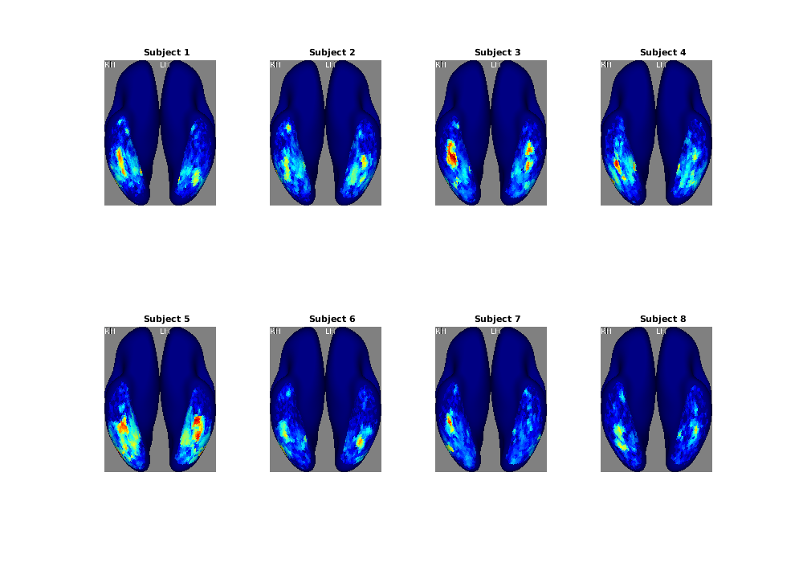
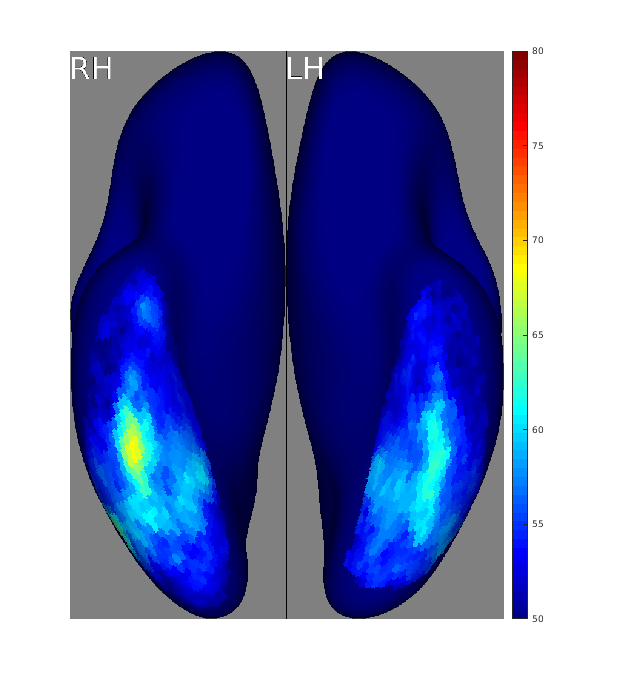

Example 8: A simple example of MVPA on the NSD betas
Contents
- Introduction
- General setup
- Load face annotations
- Load betas prepared in fsaverage space and analyze them
- load data
- prepare for searchlight
- perform analysis
- figure out vertices that live within the searchlight
- get the data
- do n-fold cross-validation
- transform searchlight results to a full fsaverage representation
- Generate cortical map visualizations
Introduction
% In this script, we perform an analysis that has parallels to the analysis % demonstrated in the Example 7 script. Whereas in that script we perform a % t-test to determine brain regions that show differential activity to % faces vs. non-faces, in this script we perform so-called % 'multivariate pattern analysis' (MVPA) in which we use a statistical % classifier in an attempt to decode, given activity in a set of voxels, % whether the presented stimulus was a face or non-face. The main % differences across the two approaches is (1) the direction of the % statistical mapping learned and (2) the fact that MVPA is typically % used to analyze many voxels at the same time whereas the t-test % operates on single voxels at a time. % % The example below also demonstrates the analysis approach termed % 'searchlight'; in this approach, analysis is performed throughout % the brain, but using small groups of voxels that are extracted % at different brain locations. % % Skills/concepts: % - MVPA, searchlight % - Dealing with surface representations % - Dealing with subsampled surfaces (e.g. fsaverage5)
General setup
% define expfile = '~/nsd/nsddata/experiments/nsd/nsd_expdesign.mat'; nsess = 2; % how many of the first N NSD sessions to consider betaver = 'betas_fithrf'; % which beta version to load radius = 3; % searchlight radius on fsaverage fsalt = 'fsaverage5'; % alternative surface for determining searchlight locations hemis = {'lh' 'rh'}; % strings referring to left and right hemispheres restrictroi = 'gVTC'; % restrict searchlight analysis to this ROI restrictroiix = [1]; % index into the ROI nfold = 5; % how many folds for n-fold cross-validation? % load exp1 = load(expfile);
Load face annotations
% load automated outputs: simple face count a1 = load('~/Dropbox/nsdabudhabi/nsdextensions/NSD_Annotation_Efforts_1.0/Automated/Faces/regcount_mode1.mat');
Load betas prepared in fsaverage space and analyze them
% loop over subjects pctcorrect = single([]); % 164k vertices x 2 hemis x 8 subjects for subjix=1:8, subjix for hh=1:length(hemis)
load data
% load in all of the betas alldata = single([]); % 327684 vertices x 750 trials x sessions for sess=1:nsess fprintf('sess%d...',sess); file0 = sprintf('~/nsd/nsddata_betas/ppdata/subj%02d/fsaverage/%s/%s.betas_session%02d.mgh',subjix,betaver,hemis{hh},sess); data = cvnloadmgz(file0); % 327684 x 1 x 1 x 750 alldata(:,:,sess) = single(permute(data,[1 4 2 3])); % use single to save on memory clear data; end % prepare face counts (750 trials x sessions, non-negative integers) imageix = exp1.subjectim(subjix,exp1.masterordering(1:750*nsess)); % 1 x trials with 73k IDs counts = a1.countval(imageix); % 1 x trials with face counts counts = reshape(counts,750,[]); % 750 trials x sessions
prepare for searchlight
% load in ROI labelings (we will use this to restrict searchlight locations) [roimask,roidescription] = cvnroimask('fsaverage',hemis{hh},restrictroi,[],[],'collapsevals'); % load in surfaces surf = cvnreadsurface('fsaverage',hemis{hh},'sphere'); surfALT = cvnreadsurface(fsalt, hemis{hh},'sphere'); hash = surf.vertices*[1000 100 1]'; assert(length(unique(hash))==size(surf.vertices,1)); hashALT = surfALT.vertices*[1000 100 1]'; assert(length(unique(hashALT))==size(surfALT.vertices,1)); XYZ = [surf.vertices ones(size(surf.vertices,1),1)]'; % prepare coordinates as 4 x V % for which fsaverage vertices will we perform searchlight analysis? mask = ismember(roimask,restrictroiix) & ... % only fsaverage vertices within the chosen ROI ismember(hash,hashALT); % only fsaverage vertices that are also in the alternative surface mask = find(mask); % a vector of indices into fsaverage vertices maskALT = []; % a corresponding vector of indices into the vertices of the alternative surface for mm=1:length(mask) maskALT(mm) = find(ismember(hashALT,hash(mask(mm)))); end
perform analysis
% loop over searchlight locations results = zeros(1,length(mask)); % this will contain pct correct for each searchlight location for ss=1:length(mask) statusdots(ss,length(mask));
figure out vertices that live within the searchlight
% get 3D coordinates coord = surf.vertices(mask(ss),:); % 1 x 3 % figure out rotation matrix rotmatrix = xyzrotatetoz(coord); % rotate all vertices so that the vertex is along z+ axis XYZ0 = rotmatrix*XYZ; % find the vertices above the equator and within radius mm searchix = find((XYZ0(3,:) >= 0) & (XYZ0(1,:).^2 + XYZ0(2,:).^2 <= radius^2)); % a vector of indices into fsaverage % Note that this procedure of selecting vertices within a circle placed on the % fsaverage sphere is only approximate. The fsaverage sphere is not only a % distorted brain shape (a sphere), it is also only an approximate representation % of the topology of individual subjects. A more accurate method of defining % searchlights would be to compute physical units on the native surface of % individual subjects.
get the data
thedata = reshape(alldata(searchix,:,:),length(searchix),[]); % vertices x trials
do n-fold cross-validation
% obtain cross-validated predictions pred = []; % 1 x trials with the predicted outcome for ff=1:nfold % split into training and testing [testix,~,trainix] = picksubset(1:size(thedata,2),[nfold ff]); % train the classifer and obtain predictions sample = thedata(:,testix)'; % testing-trials x vertices training = thedata(:,trainix)'; % training-trials x vertices group = vflatten(counts(trainix)) > 0; % training-trials x 1 with 0/1 (1 means at least one face) testclass = classify(sample,training,group,'diagLinear'); % testing-trials x 1 with the predictions pred(testix) = testclass; % Note that this is a Naive Bayes classifier, and it is just one of many % possible statistical classifiers that one could use. Common alternatives % include SVM, LDA, logistic regression, and nearest-centroid classifier. end % calculate percent correct results(ss) = mean( pred(:) == (counts(:) > 0) ) * 100; end
transform searchlight results to a full fsaverage representation
% embed searchlight results into a vector for the alternative surface vals = copymatrix(zeros(size(surfALT.vertices,1),1),maskALT,results); % use nearest-neighbor interpolation to map to the fsaverage surface vals = cvntransfertosubject(fsalt,'fsaverage',vals(:),hemis{hh},'nearest','orig','orig'); % record the results pctcorrect(:,hh,subjix) = vals; end end
subjix =
1
sess1...sess2.......................sess1...sess2.......................
subjix =
2
sess1...sess2.......................sess1...sess2.......................
subjix =
3
sess1...sess2.......................sess1...sess2.......................
subjix =
4
sess1...sess2.......................sess1...sess2.......................
subjix =
5
sess1...sess2.......................sess1...sess2.......................
subjix =
6
sess1...sess2.......................sess1...sess2.......................
subjix =
7
sess1...sess2.......................sess1...sess2.......................
subjix =
8
sess1...sess2.......................sess1...sess2.......................Generate cortical map visualizations
% first, we show individual subjects Lookup = []; figureprep([0 0 1000 700],1); for subjix=1:8 % use ventral inflated view of fsaverage; range 50% to 80% [rawimg,Lookup,rgbimg] = cvnlookup('fsaverage',3,vflatten(pctcorrect(:,:,subjix)), ... [50 80],jet(256),[],Lookup,0); % write image to disk imwrite(rgbimg,sprintf('facepct_subj%02d.png',subjix)); % also place into figure window subplot(2,4,subjix); hold on; imshow(rgbimg); title(sprintf('Subject %d',subjix)); end
% then, we show the group average cvnlookup('fsaverage',3,vflatten(mean(pctcorrect,3)),[50 80],jet(256),[],Lookup); colorbar; % since cvnlookup shows RGB images, we have to explicitly set the colormap colormap(jet); caxis([50 80]);
Warning: Image is too big to fit on screen; displaying at 67%
% Notice that the spatial patterns of results are similar to those found in Example 7.